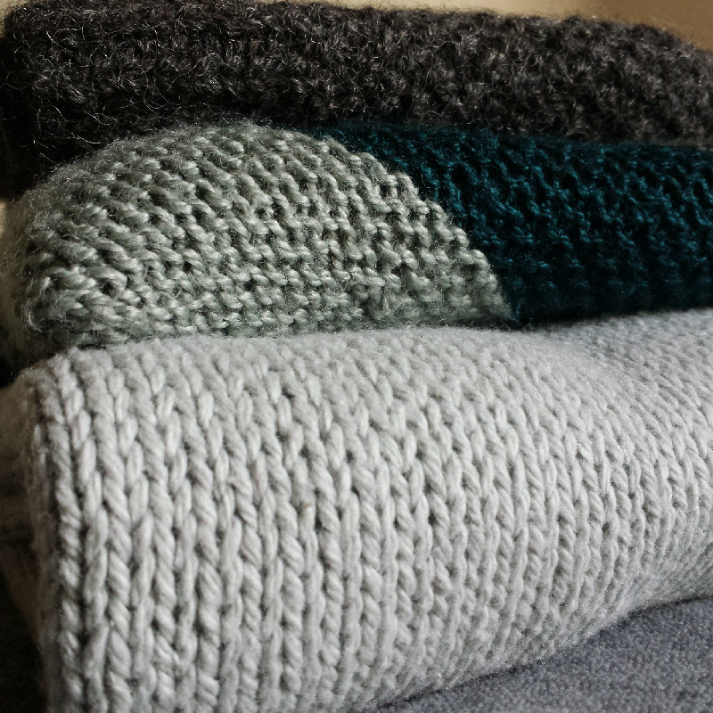
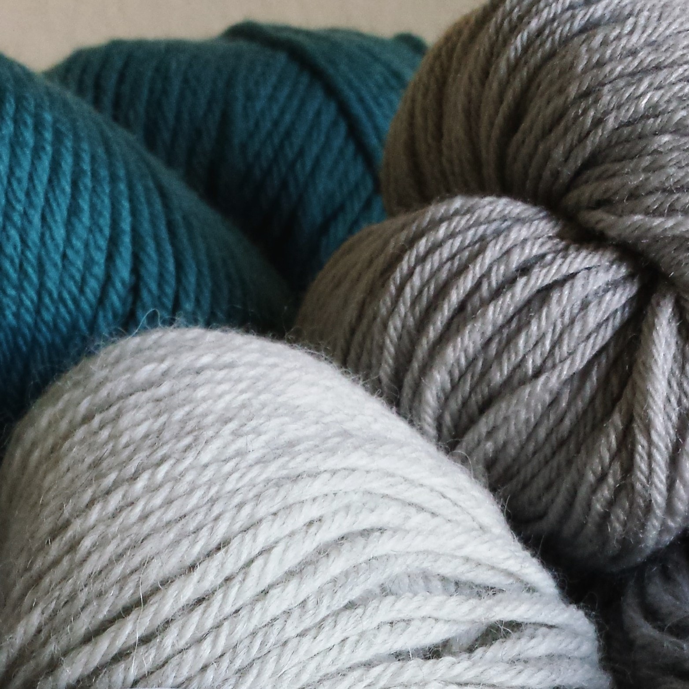

Hey There!
I'm Rebecca, a budding front end developer and programmer. I love clean and intuitive UIs, beautiful websites, and making things.
My main portfolio can be found here, and links to my live HTML/CSS sites can be found below.
My design work can also be seen at
renaissancejewelers.com, a website I moved, redesigned, and currently manage for a local business.
I can also be found on LinkedIn, Twitter, and Instagram.
Learn to Knit
The learn to knit website was the project I worked on for my two semesters of HTML and CSS while in college. Its got some JS and jQuery in there, but is mostly HTML and CSS.
Hall of Amusements
While I was in college we learned javascript by coding a series of games that lived on a site called Greg's Gambits.
At the end of the semester we could rework the site to look how we liked and update the games if we wanted.
Knitting Portfolio
As a personal project I created a little portfolio for my knitting work. I started it on a whim one weekend after realizing I didn't really have a single place where my work could be found. It is mostly HTML and CSS, with little JS.
